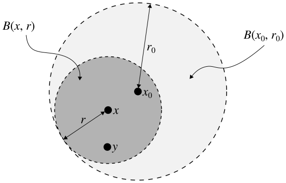

Metric Spaces (1)
Contents
Taken by themselves, sets do not have much structure to them. They are essentially barren wastelands with no relationships at all between their elements. In this post we will remedy that by defining a way to add a measure of proximity to the points in a set.
Motivation
First, I'd like to motivate the definition of a metric space a little bit. Recall the set $\mathbb{R}$ of real numbers. Given two numbers $a,b\in\mathbb{R}$ with $a< b$, we make the following definitions:
Definition. The open interval with endpoints $a$ and $b$ is the set $(a,b)=\{x\in\mathbb{R}\mid a< x< b\}$.
Definition. The closed interval with endpoints $a$ and $b$ is the set $[a,b]=\{x\in\mathbb{R}\mid a\leq x\leq b\}$.
Notice how the only difference between these two types of intervals is that the closed interval includes its endpoints whereas the open interval does not. You've no doubt been exposed to these definitions before so there isn't terribly much to discuss, but these will be our prototypes for the concepts of open and closed sets.
How do we measure the distance between two real numbers? We would like our distance to always be positive, so we take whichever number is lower and subtract it from the higher number. If we don't know which number is higher or we want to make a general statement, we make use of the absolute value function:
$$\vert x \vert=
\begin{cases}
x & \text{if } x\geq 0,\\
-x & \text{if } x<0.
\end{cases}$$
Notice that $\vert -x \vert = \vert x \vert$ for every $x\in\mathbb{R}$. Armed with this function which always returns a positive value, we can rephrase our notion of distance between real numbers $a$ and $b$. We'll call this distance $\vert a - b \vert$. The order in which the points appear no longer matters, which is a good sign.
Now let's explore some of the very nice properties of this distance function we've just defined.
- $\vert a-b \vert \geq 0$ for all $a,b\in\mathbb{R}$.
- $\vert a-b \vert = 0$ if and only if $a=b$.
- $\vert a-b \vert = \vert b-a \vert$ for all $a,b\in\mathbb{R}$.
- $\vert a-c \vert \leq \vert a-b \vert + \vert b-c \vert$ for all $a,b,c\in\mathbb{R}$.
The first three properties above should be somewhat obvious, and I will not bother proving them. The fourth property is known as the triangle inequality, and it is very important so I will prove it in two different ways so you'll have to believe it twice as hard.
Theorem. Let $a,b$ and $c$ denote real numbers. Then $\vert a-c \vert \leq \vert a-b \vert + \vert b-c \vert$.
Proof 1. From the definition of the absolute value function, we have the following two facts:
$$-\vert a-b\vert\leq a-b\leq\vert a-b\vert,$$
$$-\vert b-c\vert\leq b-c\leq\vert b-c\vert.$$Adding together these two inequalities, we see that
$$-\vert a-b\vert-\vert b-c\vert\leq (a-b)+(b-c)\leq\vert a-b\vert+\vert b-c\vert,$$
which simplifies to
$$-\big(\vert a-b\vert+\vert b-c\vert\big)\leq a-c\leq\vert a-b\vert+\vert b-c\vert.$$
If we use the definition of the absolute value function yet again, it follows that $\vert a-c\vert\leq\vert a-b\vert+\vert b-c\vert$, as desired.
Proof 2. We proceed directly by the following computation:
$$\begin{aligned}
\vert a-c\vert^2 &=\big\vert (a-b)+(b-c)\big\vert^2\\
&= \big((a-b)+(b-c)\big)\big((a-b)+(b-c)\big)\\
&=(a-b)^2+2(a-b)(b-c)+(b-c)^2\\
&=\vert a-b\vert^2+2(a-b)(b-c)+\vert b-c\vert^2\\
&\leq \vert a-b\vert^2+2\vert a-b\vert\vert b-c\vert+\vert b-c\vert^2\\
&=\big(\vert a-b\vert+\vert b-c\vert\big)^2.
\end{aligned}$$Taking the positive square root of each side, we see that $\vert a-c\vert\leq\vert a-b\vert+\vert b-c\vert$, completing the proof.
It may not be too obvious why right now, but the four properties above are extremely nice. Let's now move away from the real numbers to more general sets.
Metrics
As I mentioned before, sets do not come with any notion of distance between their elements. We can remedy this problem with the concept of a metric function, which is really just a way to define a concept of distance between every pair of points. This can tell us quite a lot about the set we're dealing with. We would like our metrics to be meaningful in some sense, so we define them in such a way that they obey precisely the four properties we just discussed pertaining to the absolute value function.
Definition. A metric (or distance function) on a set $X$ is a function $d:X\times X\to\mathbb{R}$ which satisfies the following four properties:
- $d(x,y)\geq 0$ for all $x,y\in X$.
- $d(x,y) = 0$ if and only if $x=y$.
- $d(x,y)=d(y,x)$ for all $x,y\in X$.
- $d(x,z)\leq d(x,y)+d(y,x)$ for all $x,y,z\in X$.
The concept of a metric thus captures many of the properties we associate with the concept of distance. For instance, the distance between a point and itself is always zero, which makes a lot of sense. The distance between two points is the same regardless of which direction you measure it. The distance between two points is never negative.
We add the triangle inequality into the mix because it ensures our metrics don't become too unruly (we will see later that without it, open balls wouldn't necessarily be open sets). There's a silly, but perhaps insightful, quote justifying it: "The triangle inequality means that if you are going from $x$ to $z$ and you stop for a beer, it's going to take a little longer."
Definition. A metric space is a set $X$ together with a metric on $X$.
Notice that we can turn any set into a metric space! This means that we can talk about distances between points in any set. Not all such metrics are particularly useful, but we can at least define them.
We'll frequently just refer to the set $X$ as a metric space if its metric is implicitly understood. When talking about $n$-dimensional Euclidean space, $\mathbb{R}^n$, it should be understood that we are always referring to it as a metric space with the following metric, unless otherwise stated. This is really just the distance function you're used to extended to $n$-dimensional space:
Definition. The standard metric (or Euclidean metric) on $\mathbb{R}^n$ is defined by
$$ d({\bf x,y})=\sqrt{\sum\limits_{i=1}^n(x_i-y_i)^2}$$
for all ${\bf x,y}\in\mathbb{R}^n$, where
$$\begin{aligned}
{\bf x} &= (x_1,x_2,\dotsc,x_n),\\
{\bf y} &= (y_1,y_2,\dotsc,y_n)
\end{aligned}$$for some $x_1,x_2,\dotsc,x_n,y_1,y_2,\dotsc,y_n\in\mathbb{R}$.
Open and closed sets
Next, let's generalize the notions of open and closed intervals to arbitrary metric spaces. In each of the following definitions, let $X$ denote a metric space with distance function $d$, and let $r\in\mathbb{R}$.
Definition. An open ball of radius $r>0$ centered at the point $x_0\in X$ is the set $B(x_0,r)=\{x\in X\mid d(x,x_0)< r\}$.
Definition. A closed ball of radius $r>0$ centered at the point $x_0\in X$ is the set $\overline{B}(x_0,r)=\{x\in X\mid d(x,x_0)\leq r\}$.
Both open and closed balls contain all the points of distance less than $r$ from $x_0$. The only difference is that a closed ball also contains the points precisely $r$ away from $x_0$.
We're now set up to define the concept of an open set. This definition is crucial, so be certain to firmly grasp it before moving on.
{kind=link}
Definition. A subset $U$ of a metric space $X$ is open in $X$ if for every point $x\in U$ there exists a real number $r>0$ for which the open ball $B(x,r)\subseteq U$.
I'm going to rephrase this definition slightly before moving on, just to really drill it into your head. A set is open if every point in the set is at the center of some open ball which is itself completely contained in that set. In the familiar metric spaces, this definition neatly captures the idea that no matter how close you get to the edge of an open set, there are always more points inside which are closer to the edge.
Now let's prove something that really ought to be true. I'll even throw in a pretty picture for clarity.
Theorem. In any metric space, an open ball is an open set.
Proof. Suppose we are given an arbitrary open ball of radius $r_0$ centered at a point $x_0$ in a metric space $X$. We need to show that for every point $x\in B(x_0,r_0)$, we can find a real number $r>0$ such that $B(x,r)\subseteq B(x_0,r_0)$.
Before making this argument rigorous, let's take a look at the following diagram of an open ball in $\mathbb{R}^2$ for a hint as to how we should proceed:

It certainly looks like we could choose $r=r_0-d(x,x_0)$, at least for the open ball above. We'd like to confirm that this choice will work for any open ball in any metric space. We'll argue that, given this choice of $r$, any point $y\in B(x,r)$ is also in $B(x_0,r_0)$. This will certainly show that $B(x,r)\subseteq B(x_0,r_0)$, and that's all we need to do!
With all this in mind, choose any point $y\in B(x,r)$. Notice first that, from our choice of $r$, we have that $d(x,x_0)=r_0-r$. Observe also that $d(x,y)< r$ by the definition of our open ball $B(x,r)$. We now proceed with the following computation:
$$\begin{aligned}
d(x_0,y) &\leq d(x_0,x)+d(x,y)\\
&<(r_0-r)+r\\
&=r_0.
\end{aligned}$$But this implies, by the definition of our open ball $B(x_0,r_0)$, that $y\in B(x_0,r_0)$. Thus we have shown that $B(x,r)\subseteq B(x_0,r_0)$, as desired.
That was actually a decent amount of work to prove something which seemed obvious, right? Notice how without the triangle inequality in the first line of this computation, we could not have finished this proof.
Before going any further, let's look at some results which are easier to prove.
Theorem. In any metric space $X$, the entire set $X$ is itself open.
Proof. For any point $x\in X$, every real number $r>0$ satisfies the condition that $B(x,r)\subseteq X$, because every open ball consists only of points in $X$. It follows that $X$ is an open set.
That was short! Here's an even simpler one:
Theorem. In any metric space $X$, the empty set $\varnothing=\{\}$ is open.
Proof. Since there are by definition no points in the empty set, it is vacuously true that every point in $\varnothing$ is at the center of an open ball contained in $\varnothing$. It follows that the empty set is open.
Since we're on a roll, let's move on to the definition of a closed set, shall we?
Definition. A subset $U$ of a metric space $X$ is closed in $X$ if its complement, $X-U$, is open in $X$.
This leads to another closely-related pair of theorems with even easier proofs.
Theorem. In any metric space $X$, the empty set is closed.
Proof. The complement of the empty set is $X-\varnothing=X$. Since $X$ is open, it follows that the empty set is closed.
I bet you can already guess the next one.
Theorem. In any metric space $X$, the entire set $X$ is itself closed.
Proof. The complement of $X$ is $X-X=\varnothing$. Since the empty set is open, it follows that $X$ is closed.
At first glance, these might seem like they contradict our earlier statements about these very same sets being open. The empty set and the space itself are both open and closed? I've heard several times the phrase "a set is not a door." Yes, sets can be both open and closed. The two are not mutually exclusive. It's also easy to find examples of sets in metric spaces which are neither open nor closed!
The next thing we should do is confirm that a closed ball is a closed set — otherwise we'd be in a fair bit of trouble. This proof is pretty similar to the proof that an open ball is open, but a teensy bit trickier.
Theorem. In any metric space, a closed ball is a closed set.
Proof. Suppose we are given an arbitrary closed ball of radius $r_0$ centered at a point $x_0$ in a metric space $X$. If we can show that its complement, $X-\overline{B}(x_0,r_0)$, is open, then by the definition of a closed set, we will be done. Thus, we need to show that for every point $x\in X-\overline{B}(x_0,r_0)$ we can find a real number $r>0$ such that $B(x,r)\subseteq X-\overline{B}(x_0,r_0)$.
Once again, let's look at a diagram for some intuition before we dive any further into the proof:
A little bit of inspection indicates that it might suffice to choose $r=d(x,x_0)-r_0$. We'll argue that, given this choice of $r$, any point $y\in B(x,r)$ is also in $X-\overline{B}(x_0,r_0)$. This will certainly show that $B(x,r)\subseteq X-\overline{B}(x_0,r_0)$, and then we'll be finished.
With all this in mind, choose any point $y\in B(x,r)$. Notice first that, from our choice of $r$, we have that $d(x,x_0)=r+r_0$. Observe also that $d(x,y)< r$ by the definition of our open ball $B(x,r)$. We now proceed with the following computation, again starting with a slightly rearranged form of the triangle inequality:
$$\begin{aligned}
d(x_0,y)&\geq d(x,x_0)-d(x,y)\\
&=(r+r_0)-d(x,y)\\
&>r_0.
\end{aligned}$$The last step above may take a little bit of explanation. Since $d(x,y)< r$, clearly $r-d(x,y)>0$. Thus, $r+r_0-d(x,y)>r_0$, which hopefully makes things a bit clearer.
Since $d(x_0,y)>r_0$, it follows that $y\notin\overline{B}(x_0,r_0)$ by the definition of this closed ball. It follows that $y\in X-\overline{B}(x_0,r_0)$. Thus, $X-\overline{B}(x_0,r_0)$ is open and so its complement $\overline{B}(x_0,r_0)$ is closed, as desired.
That's enough for one post, I think. Don't worry though — we've only just begun with the joys of metric spaces!